Carnaval:
a diáspora africana atravessa o mar
para contar sua história na avenida.
17 de fevereiro
de 1969.
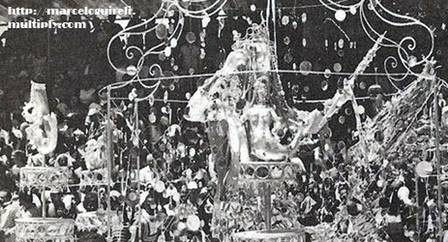
Uma aparição na avenida.
Três metros de papel machê prateado e um mar de espelhos.
Carnavalesco: Arlindo Rodrigues
Enredo: Bahia de Todos os Deuses
O carnaval brasileiro
é um terreiro estendido.
A avenida é solo sagrado. O samba-enredo é a forma pela qual a diáspora africana, depois de séculos silenciada, contou, e conta, sua própria história.
As raízes:
da senzala
ao quintal.
Antes de qualquer escola de samba existir, já havia uma cidade negra dentro do Rio, um terreiro aquilombado no comando das tias baianas.
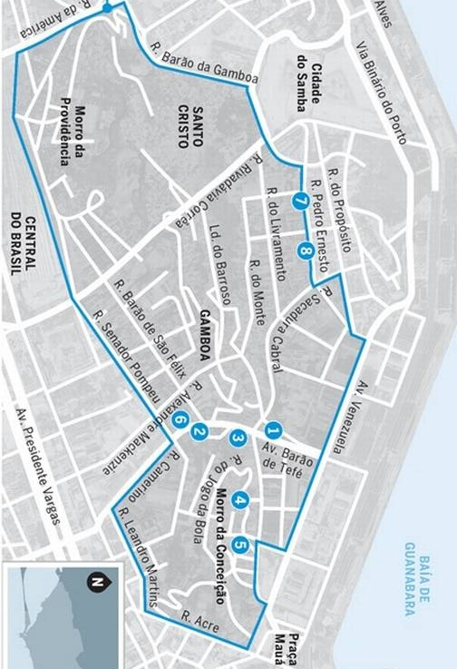
Saúde, Gamboa, Santo Cristo,
Cidade Nova, Praça Onze.
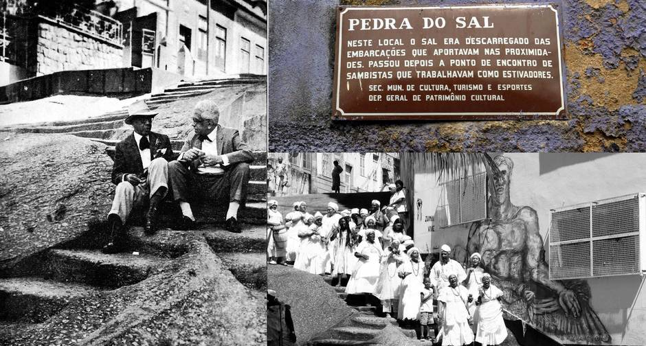
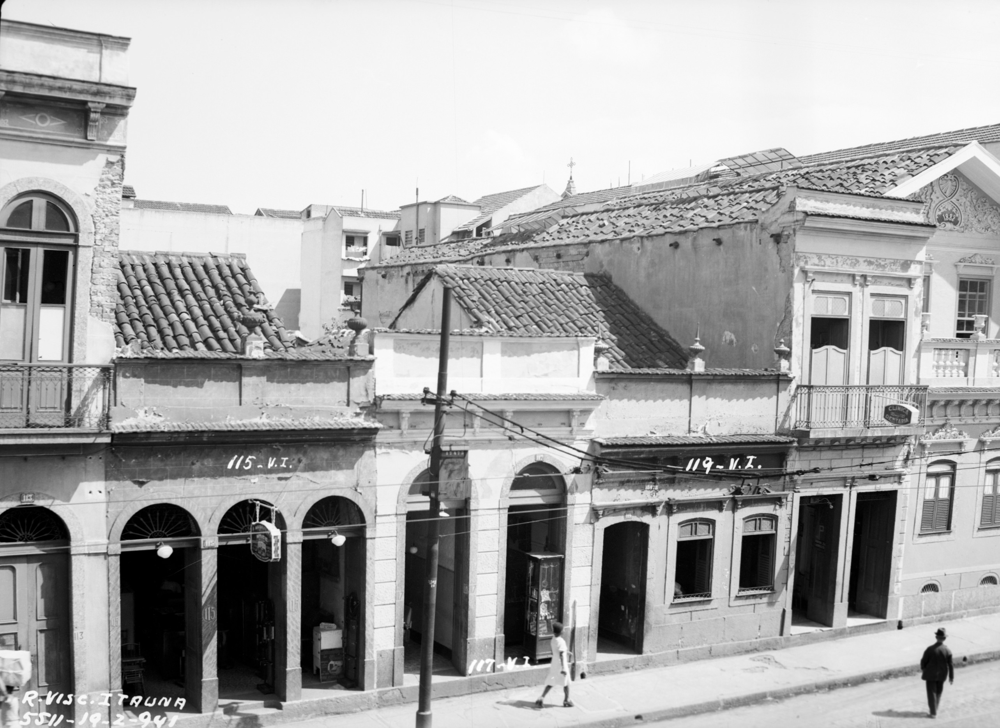
Os quintais
viraram terreiros.
Os terreiros
viraram escolas.
Nas casas coletivas da Pequena África, samba e macumba eram a mesma coisa. Depois do ebó, vinha a roda. Depois da roda, vinha o partido-alto. A escola de samba nasce dessa estrutura quintal-terreiro, herdada diretamente das mães-de-santo.
Tia Ciata. Tia Amélia. Tia Perciliana.
Tia Bebiana. Tia Carmem
Todas elas rainhas negras do Rio antigo. Mães-de-santo, articuladoras políticas, empresárias, costureiras. Sem essas mulheres, não existe samba carioca.
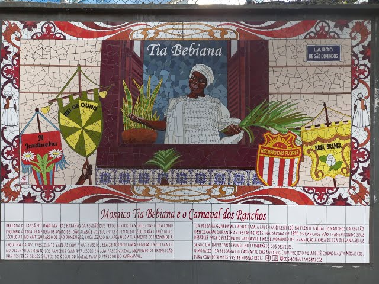
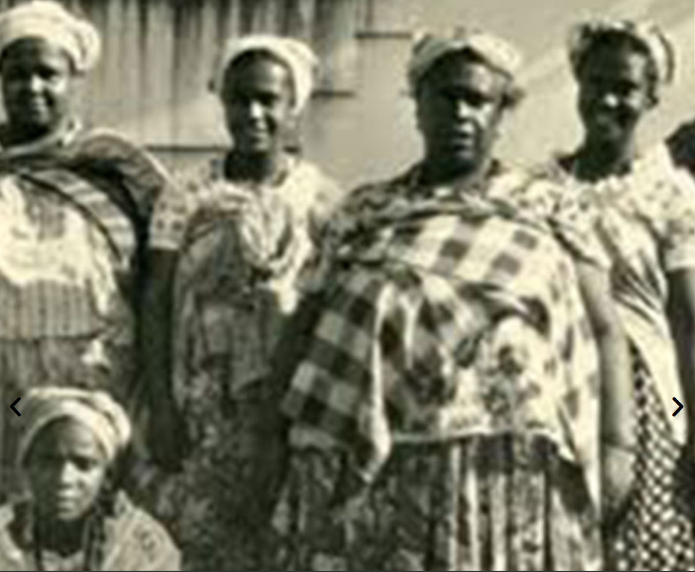
Tia Ciata,
Mãe-Pequena de Oxum.
Matriarca do casarão da Rua Visconde de Itaúna. Conhecida como a Matriarca do Samba. Mãe-pequena de Oxum. Enredo da Paraíso do Tuiutí 2027.
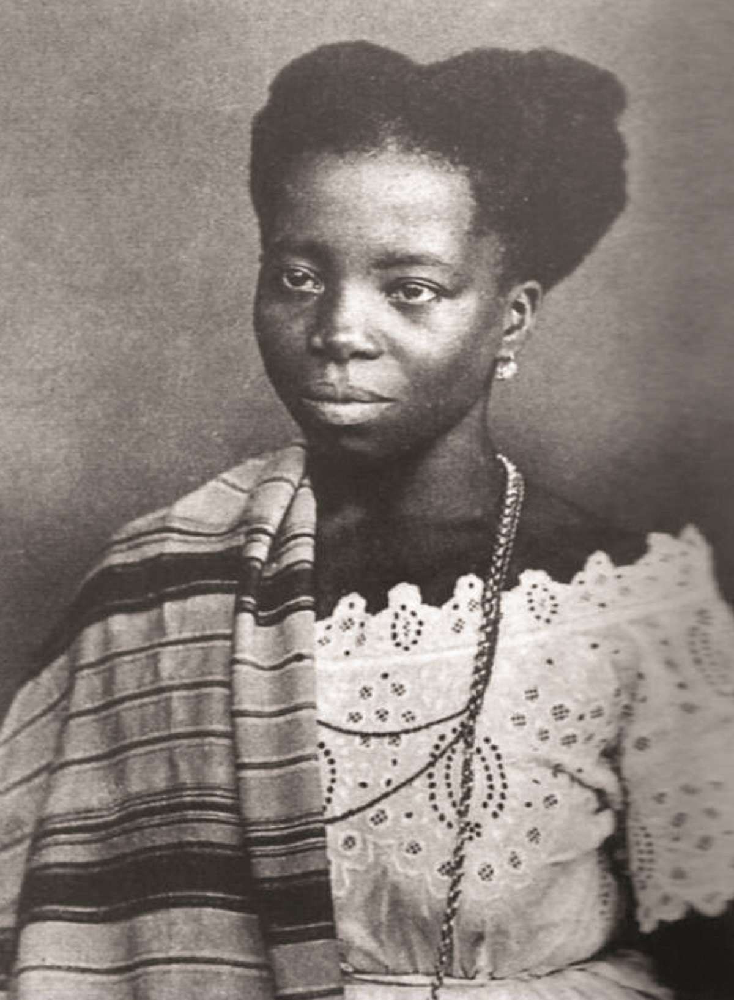
A gramática
dos tambores.
Antes da letra do samba existir, o couro percutido já estava falando: em iorubá, em jeje, em angola. O ritmo veio antes da palavra.
O ritmo veio
antes da palavra.
Cada toque é uma invocação. Cada bateria, um terreiro em movimento. Independentemente do que diga a letra.
O tambor também é livro
e o aguidavi, a vareta sagrada
que percute o couro, é caneta
poderosíssima para contar
as aventuras do mundo.
Cada bateria
é um assentamento.
Batizada em 20 de janeiro, dia de Oxóssi. As caixas tocam agueré: assentamento rítmico do caçador na avenida.
Mocidade 1968: desfilou Rugendas, mas a bateria tocou agueré o desfile inteiro.
O silenciamento.
1930 a 1959.
Três décadas em que o Estado obrigou as escolas de samba a desfilar enredos nacionalistas. O tambor não calou. Mas a letra teve que cantar a história alheia.
Para os governos, nada melhor do que agremiações
negras, das camadas pobres, colocadas a serviço
de uma história oficial repleta de grandes efemérides.
O negro conta a história do branco.
37
entre o primeiro samba-enredo e o primeiro orixá citado por nome na avenida.
1929: início do samba-enredo. 1966: o Império Serrano cita Iemanjá pela primeira vez.
Carnaval da Vitória, 1946.
Fim da Segunda Guerra. Comunidades negras periféricas, excluídas da cidadania plena, desfilando para glorificar a vitória dos Aliados.
do Novo Mundo
História
de Monte Castelo
A avenida era delas. A história narrada, não.
A virada
de 1960.
Fernando Pamplona aceita ir para o Salgueiro com uma condição: o enredo será Quilombo dos Palmares. Pela primeira vez, um guerreiro negro armado vai à Sapucaí como protagonista épico.
1960.
O Salgueiro
levanta Zumbi.
Carnavalesco: Fernando Pamplona
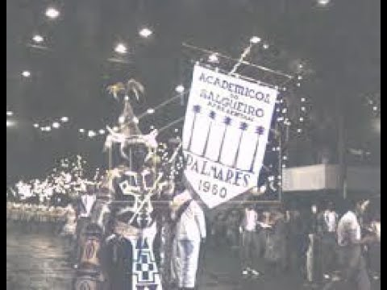
O Quilombo dos Palmares
foi apresentado, no Salgueiro de 1960,
como a Tróia Negra
nas matas nordestinas.
A linhagem
dos insubmissos.
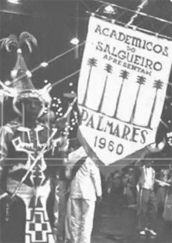
dos Palmares
Zumbi como herói épico.
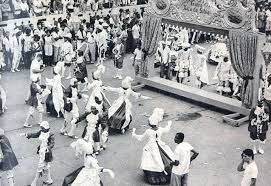
da Silva
Negra insubmissa vence o sistema.
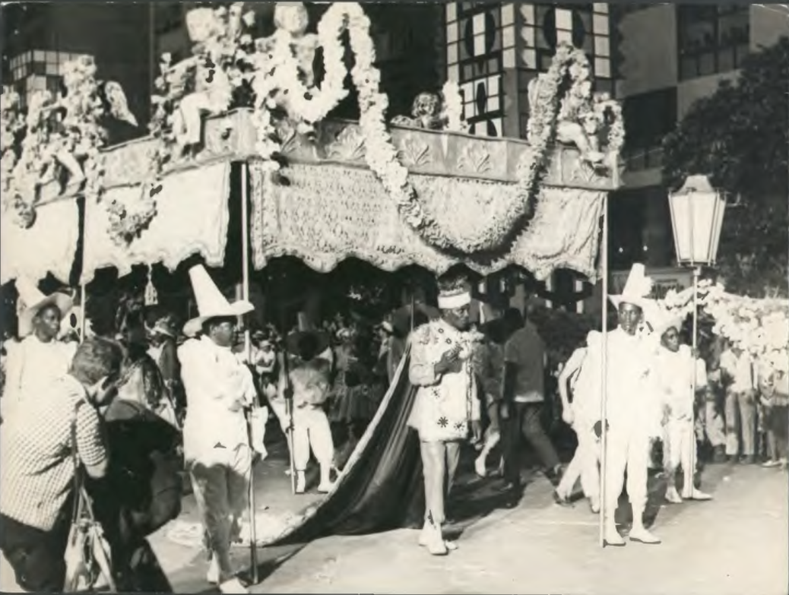
Rei
Rei africano escravizado, comprou sua liberdade.
A epifania
do sagrado.
Uma coisa é contar a história do quilombo… outra é trazer o orixá. Trazer a mãe. Entre 1966 e 1978, o sagrado afro-brasileiro irrompe na avenida… e nunca mais sai.
Do navio negreiro
à cosmogonia nagô.
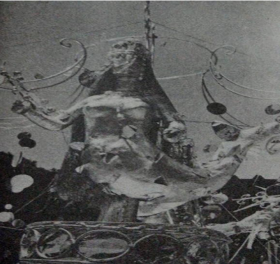
1969, Iemanjá desce na avenida.
Não foi alegoria. Foi teofania.
Foto: Revista Manchete
O folclore virou liturgia.
O exótico virou sagrado.
A Bahia citada como "terra do acarajé e do feitiço". Tom turístico. O sagrado disfarçado de curiosidade pitoresca para a elite branca.
O orixá nomeado, com poder próprio, como protagonista do desfile. A avenida se converte em extensão do terreiro. O xirê profano vira xirê sagrado.
A avenida
vira terreiro.
2018, o Império da Tijuca não representa o sagrado. Pratica o sagrado. Durante uma hora e meia, a Sapucaí é a Casa de Omolu.

Olubajé:
um banquete
para o rei.
O Olubajé é a cerimônia pública de adoração a Omolu, o orixá das doenças e da cura. "Aquele que aceita comer conosco". Alimento sagrado em folha de mamona, partilhado com a comunidade.
Não representou. Operou.
A bateria
bateu para o
orixá.
O opanijé é o toque ritual de Omolu. Em 2018, o Império executou opanijé durante toda a apresentação em cadência e semelhança.
A avenida
como livro.
A Avenida ensina Zumbi, Dandara, Tereza de Benguela, os orixás.
A avenida chegou
antes dos livros.
O samba ensinou três gerações antes da escola formal começar.
Cinco sambas que
a avenida ensinou
antes da escola.
Cada um deles passou pela Sapucaí entre 2022 e 2025. Cada um deles reescreveu uma página do currículo nacional.
Ómi Tútú
ao Olúfon.
"Vai começar o itã de Oxalá
Segue o cortejo funfun ao Senhor de Ifón, babá."
O samba não cita o itã. Reproduz o itã inteiro: viagem ao reino de Xangô, as três interdições de Exú, sete anos de prisão, o banho de água fresca.
As Áfricas
que a Bahia canta.
"O samba foi morar onde o Rio é mais baiano
Reina a ginga de Iaiá na ladeira."
Justiça memorial às Tias Baianas. E "Áfricas", no plural, porque a diáspora não veio de uma África só.
Salgueiro
de Corpo Fechado.
"Prepara o alguidar, acende a vela
Firma ponto ao sentinela."
Um glossário vivo do terreiro. Alguidar, pemba, patuá, mojubá, marabô, defumação, ervas, contra-egum, curimba, gongá. "Meu terreiro é a casa da mandinga."
Fala, Majeté!
Sete Chaves de Exú.
"Lá na encruza, onde a flor nasceu raiz
Eu levo fé nesse povo que diz
Adakê Exú...ê Mojubá!"
Campeã cantando Exú, o orixá mais demonizado. Bombogira, Tranca Rua, Capa Preta. Terminou citando Estamira como profeta.
Arroboboi
Dangbê.
"Ergue a casa de Bogum, atabaque na Bahia
Ya é Gu rainha, herdeira do candomblé
Centenário fundamento da costa da mina.
Semente de uma legião de fé"
Primeira vez que o Grupo Especial centra seu enredo num vodum jeje. Candomblé tem nações. A diáspora é plural.
Sambas que reescreveram o Brasil.
Navio Negreiro
"Navio negreiro, navio da dor / Que trouxe da África o negro senhor."
Kizomba, a Festa da Raça
"Cem anos atrás foi a abolição / E a liberdade ainda não chegou."
História pra Ninar Gente Grande
"A história que a história não conta / Brasil, o teu nome é Dandara."
Um Defeito de Cor
"Tal a história de Mahin, liberdade se rebela / Nasci quilombo e cresci favela."
O desfile esgotou o livro de Ana Maria Gonçalves na Amazon.
A Criação do Mundo na Tradição Nagô
A cosmogonia iorubá inteira na avenida. Joãosinho Trinta. Ápice da era.
Bahia de Todos os Deuses
"Preto velho Benedito já dizia / Felicidade também mora na Bahia."
A vitória
da diáspora.
Não a vitória de uma escola sobre outra. A vitória de uma civilização que foi quebrada para se levantar.
O axé também
dobrou a esquina.
A mesma revolução litúrgica atravessou a Serra do Mar. Escolas paulistanas seguem a linhagem: tambor que veio dos terreiros, axé que vai pra avenida.
Alegre
do Tatuapé
Verde e Branco
de Ouro
de Ouro
do Tucuruvi
O tambor que bate no Anhembi é o mesmo que bateu nos terreiros do Bixiga, da Casa Verde, do Tatuapé. Mesma linhagem. Mesma raiz.
A diáspora opera como Yangí,
a pedra sagrada de Exú,
que se fragmenta para se colocar de pé,
ingerindo os traumas do mundo
para restituí-los transformados.
Iemanjá começou tudo isso.
E nunca foi enredo
de uma escola de samba.
Ela abre o caminho pra todo mundo passar. E ela mesma fica na beira do mar, esperando. É de quem é a mãe.
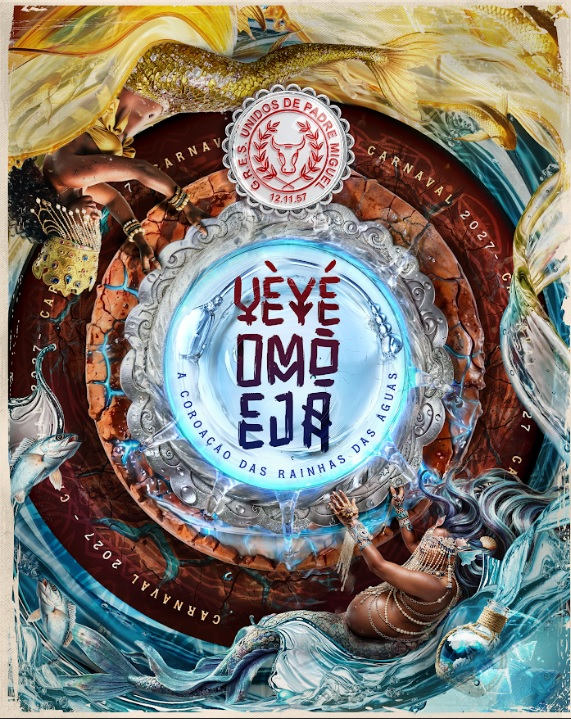
Laroyê, Exú.
Odoyá Iemanjá.
Axé.
Obrigada.
Quem quer aprender a raiz,
vá assistir carnaval.